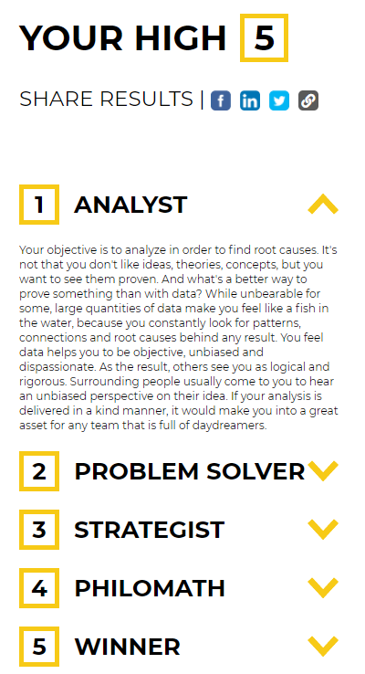

Identity & Values
Introduction
These are some of the Personally Test results.
High 5
Dope Test
Myers Briggs
An Ethical Deceision
Golf Competition
I played Golf somewhatt competively as a kid. I got matched up to play against one of my younger selfs golfing role models that belonged to the club. We where good mates and get a long well. We where playing the third to last hole of our match, I was two up with three to play. My opponent got in some trouble near the trees and wanted relief/move-away from it. It was a tough internal decesion for me to say no you don't get relief. If it was any other time and it was a casual game, I would just say yes. Needless to say I felt very guilty I felt like a betrayed a friend and what I did was wrong. I kept telling myself its just the rules its not my fault. I won the match because of this. No one ever gave me any stick for this they all undestood that it's the rules but I still feel like it was wrong. To me that's ethics, even when you justify a decesion to be the correct one there is still another branch of ethics to say that was not the right decesion.
Describe how your culture has influenced your Values and Identity
This is a tricky one for me to look at. I never really think of myself as being impacted by my surroundings that much. My most influentially factor in determining my values and identity has been Family. My parents love sport and that in turn has become a big part of my life. With the passion for sport also came the drive to play it. After a while it no longer was about having fun and now striving for exelence. There was a point at which sport in a casual evironment was no longer about having fun but having fun winning. This sort of manailty was also enforced in my schooling. I was pushed into a pathway that seperated me from my firends. This pathway was thought as the smart pathway, no idea why but my parents really wanted me to go that way. This pathway fostered an introverted perspective. There was no collobaration it was purely one final exam at the end of the year for 100% of your grade.
One of the other things that has been enforced is the idea that there will always be someone that can do what you can do better. Not sure where this come from. I don't look at this a negative I think of it as a positive that there is always room for improvement. I want to find out how they do it and learn from it to better myself.
Strengths & Limitations
What are my strengths
- Problem Solver
- Analytical
- Detail orientated
- Investigator
What are my Limitations
- Reserved
- Time Management
- Obsessive
- Introverted
How does this line up with Dev Academy and my carreer goals
I think my strengths line up well with Dev Academy but are more focused on the Foundations part of the course. Dev Acedemy seems very self led in this regard something I'm at good at.
I have as one of my weaknesses Obsessiveness. This is one thing I found out about myself when I stareted to really enjoy learning, something I never thought I would. I tend to go overboard, this kind of links with my poor time management. I will obsessive over something where it's always on my mind. I think that has its posiives but also means I burn out very quickly. This is why I favoured Dev Academy as well the pace of learning and the short time to do it matches up with me.
My greatness weekness that I notice myself is time management. In the two weeks of Foundations I have already got on a bad habbit. I still make sure to do the 8 hours a day minium of learning, but its fair to say those are not at normal hours. Another one of my weakness that seems to get in the way for me is my reserved and introverted nature. I had one on ones with my managers and this was always the main thing they wanted me to work on. They said by myself I work well and have good ideas, but as soon as I'm in a group I never speak up and voice any opionion.
A Collaborative Example
Worst collobrative Experince
In my final year of Uni we had a project worth 50% of grade for three subjects to present at the end of the year. This project was not good in the slightest. The fact we passed was a shock to me geniuely. When I colloborate with others there is a pattern of the people in the group. There is the leader, unspoken but everyone knows its that person. That was me for some reason and I really tried to get them to work together. The issue was to many of our group did not give a shit. To be far they said that from the start. "BuT wE hAD To PrE$enT CoLaboRATiveLY". Some personal issues come up and I had to go to a funeral. I told the teachers and they said you need to be there can you still come. I said I'd come for our presentation then leave and they agreed. So all good. We tried to plan a presentation and rehease but only three out of 6 showed up for them. So I kept talking with saying them that you need to present this and you have 4 mins for each section we can't go over as the time limits are strict. Long story short they all go over 4 minutes some not by that much some present for 8 mins. So we get cut short and I present nothing. Not gonna lie I was pissed and just walked out the class and shut the door behind me. I was not proud of it, but thought it was a better option then talking to others in my group. Then had to drive down to Tauragna for the funeral, I did not miss the service but I should have been there with my Family before hand.
Strategry
My main thinking now when it comes to collobartive projects is that everyone needs to have a similar level of desire to complete the project. In my job we work in Agile environment and geniuely the collobrative work that goes on there is great. I really believe that this happens because everyone wants to succeed and has a similar threshold of what success is.